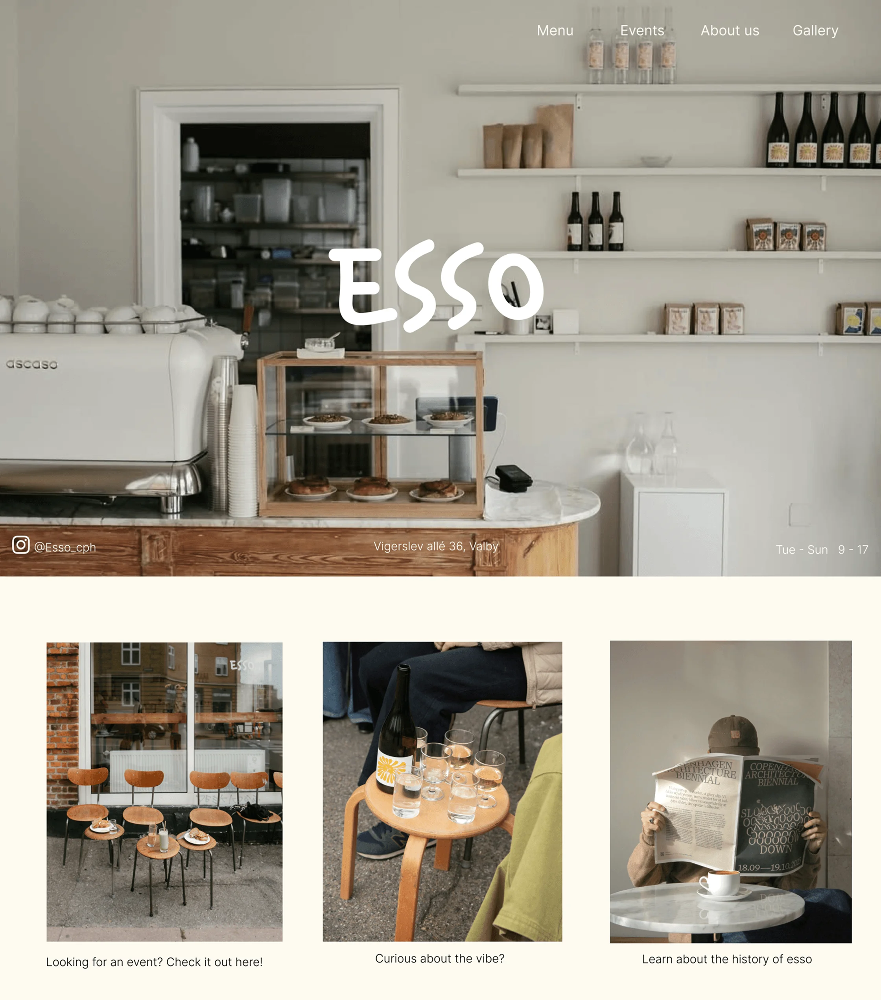
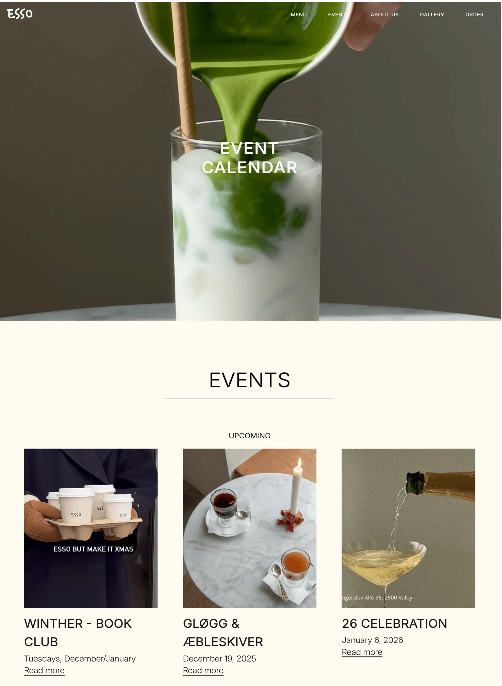
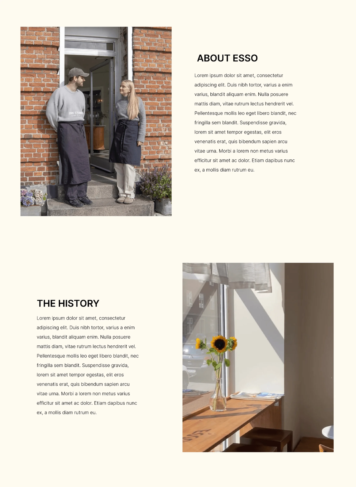
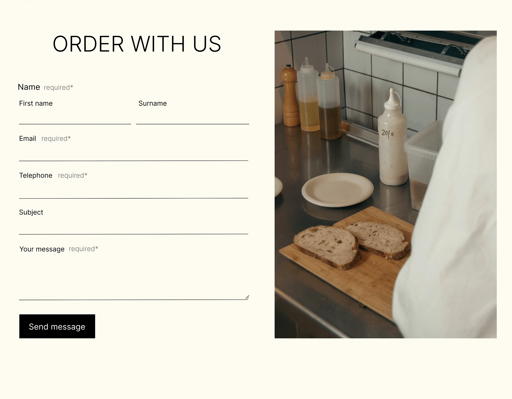
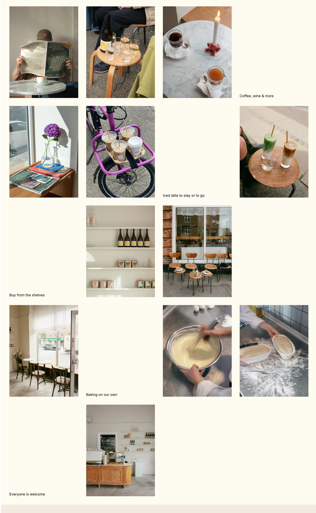
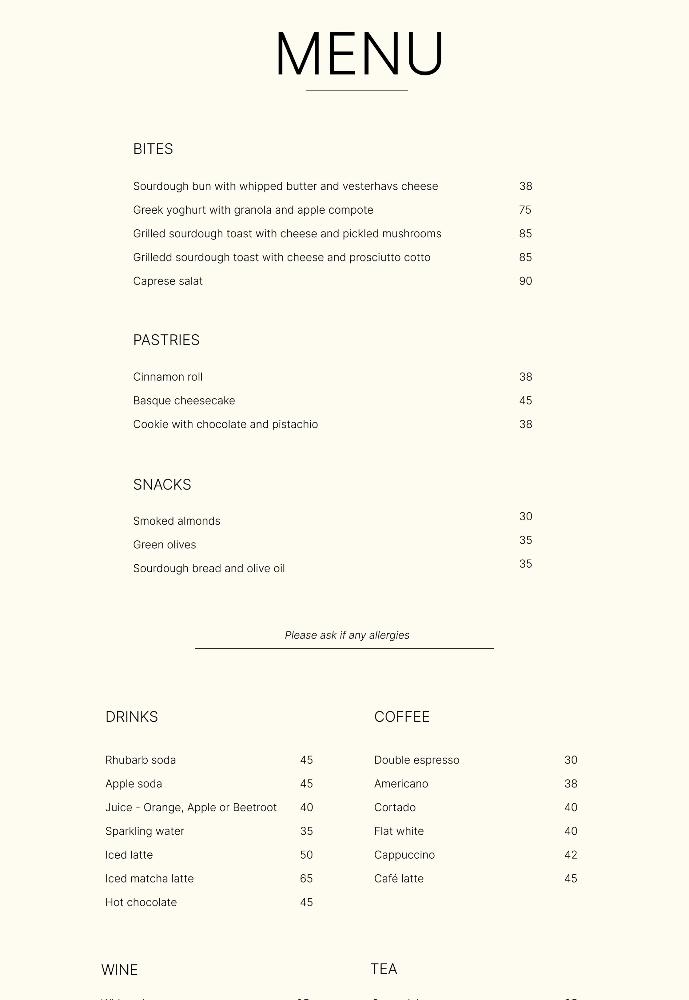

CAFE ESSO
Café Esso is a local business whose existing website was redesigned
with a focus on creating a more engaging and user-friendly digital
experience.
The project combined web design and UX/UI
with content production, including art direction, photography and
written content. The new visual direction and content were developed
to create a more cohesive digital presence while better
communicating the café and its identity.





